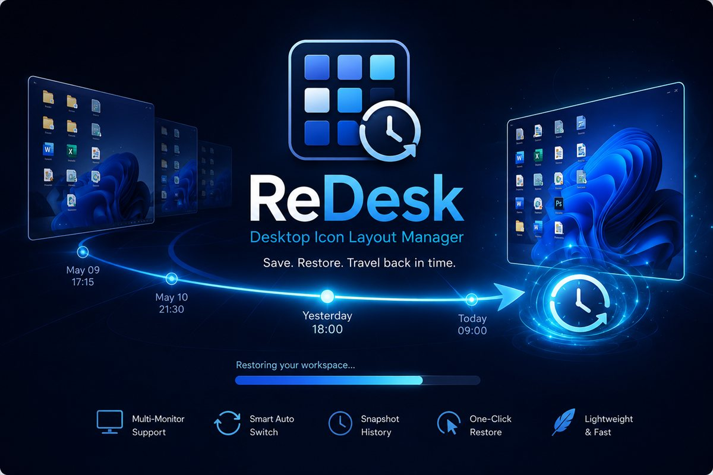
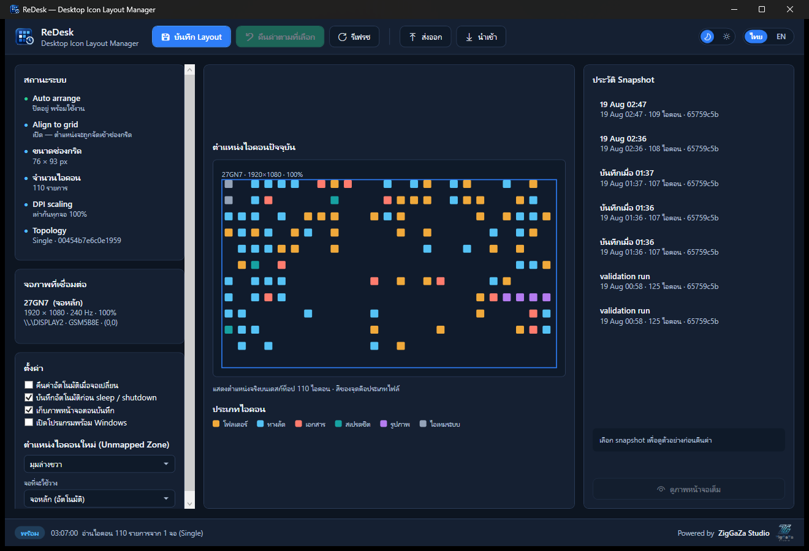
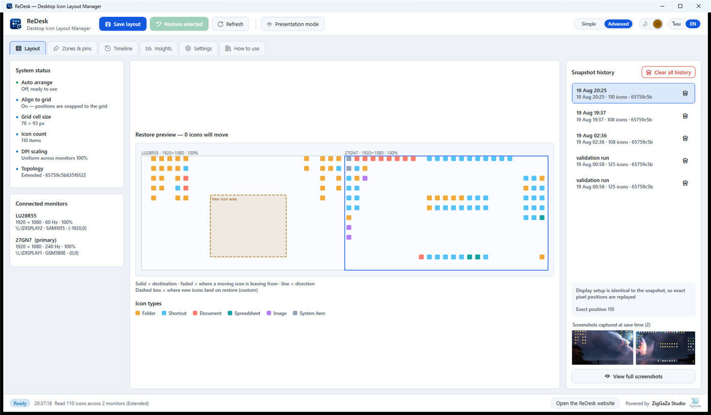
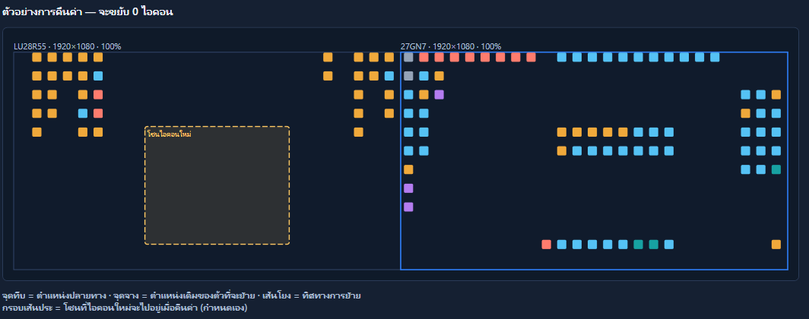
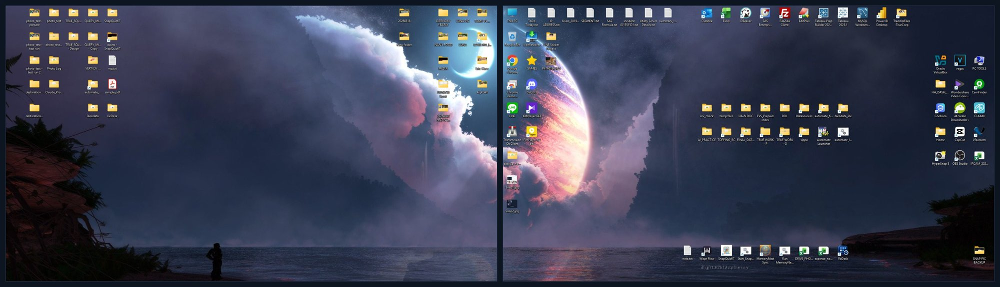

ถอดจอเสริมตอนเลิกงาน แล้วพรุ่งนี้ไอคอนกองรวมกันที่มุมซ้ายบน — ReDesk จำตำแหน่งไอคอนของคุณ แล้วคืนค่ากลับให้อัตโนมัติทุกครั้งที่การต่อจอเปลี่ยน
Save. Restore. Travel back in time.

ทุกครั้งที่โครงสร้างจอเปลี่ยน Windows จะคำนวณตำแหน่งไอคอนใหม่ และมักคำนวณผิด
ไอคอนที่เคยอยู่จอที่ 2 ถูกยัดกลับมากองรวมกันบนจอหลัก ทับของเดิมจนหาอะไรไม่เจอ
ลดจาก 4K เหลือ 1080p แล้วไอคอนที่อยู่นอกกรอบใหม่ถูกดันมาเรียงใหม่หมด
ปรับจาก 100% เป็น 150% ขนาดช่องกริดโตขึ้น ไอคอนเลื่อนตำแหน่งทั้งจอ
ออกแบบมาสำหรับคนที่ต่อหลายจอและย้ายเครื่องบ่อย
จดจำโครงสร้างการต่อจอแบบละเอียด แล้วสร้าง profile แยกให้แต่ละรูปแบบโดยอัตโนมัติ
ตรวจจับการเปลี่ยนจอแล้วคืนค่า layout ที่ตรงกับการต่อจอชุดนั้นให้ทันที
WM_DISPLAYCHANGE พร้อมหน่วงเวลาให้ระบบนิ่งก่อนตัดสินใจเก็บประวัติ snapshot ย้อนหลัง 30 ครั้ง กดย้อนกลับไปจุดไหนก็ได้ ลบทีละรายการหรือล้างทั้งหมดได้
แผนที่ย่อส่วนตามสัดส่วนจริง แสดงว่าไอคอนไหนจะย้ายไปไหนก่อนกดยืนยัน
ไอคอนจากจอที่ถูกถอดออกจะถูกพักไว้ในโซนที่กำหนด พร้อมจำว่าบ้านเดิมอยู่จอไหน
ทำงานเงียบๆ ใน System Tray แบบ event-driven ล้วน ไม่มี polling loop
สลับภาษาและธีมได้ทันทีในคลิกเดียว จำค่าไว้ให้ครั้งถัดไป
Export / Import profile เป็นไฟล์ JSON อ่านออกด้วยตาเปล่า
ไม่ใช่แค่คืนตำแหน่ง แต่จัดระเบียบให้ด้วย
ระบบดูประวัติแล้วหาไอคอนที่คุณต้องลากกลับที่เดิมซ้ำๆ แล้วเสนอให้ปักหมุด
ใช้ประวัติที่เก็บอยู่แล้วมาตอบคำถามที่ไม่มีเครื่องมือไหนตอบได้
สลับ layout ตามที่คุณอยู่และสิ่งที่คุณกำลังทำ ไม่ใช่แค่ตามจอที่ต่อ
เปิดมาเป็นโหมดใช้งานง่าย เห็นแค่สิ่งที่ต้องใช้จริง กดสวิตช์เดียวเปิดเครื่องมือทั้งหมด
ไม่ต้องเปิดเว็บหาวิธีใช้ กดแท็บ วิธีใช้งาน ในแอปแล้วอ่านได้ทันที
ภาพจริงจากตัวโปรแกรมที่ทำงานอยู่ ไม่ใช่ภาพจำลอง




จัดวางไอคอนบนเดสก์ท็อปตามที่ชอบ แล้วเปิด ReDesk กด บันทึก Layout ครั้งเดียว
ติ๊ก คืนค่าอัตโนมัติเมื่อจอเปลี่ยน และ เปิดโปรแกรมพร้อม Windows จากนั้นปล่อยให้มันทำงานเอง
ถอด-เสียบจอ เปลี่ยนความละเอียด หรือปรับ scaling ได้ตามใจ ไอคอนกลับที่เดิมเองทุกครั้ง
สำหรับคนที่อยากรู้ว่าข้างในทำงานยังไง
| ระบบที่รองรับ | Windows 10 (1703 ขึ้นไป) และ Windows 11 · 64-bit |
|---|---|
| สิ่งที่ต้องมี | ไม่มี — ไฟล์หลักรวมทุกอย่างไว้ในตัวแล้ว (ไฟล์ทางเลือกขนาดเล็กต้องมี .NET 10 Desktop Runtime) |
| ขนาดไฟล์ | ไฟล์เดียว 66 MB รวม runtime · หรือแบบเล็ก 1.9 MB สำหรับเครื่องที่มี .NET 10 อยู่แล้ว |
| หน่วยความจำ | 20–40 MB ขณะย่อลง System Tray |
| การใช้ CPU | 0% ขณะ idle — เป็น event-driven ไม่มี polling |
| วิธีอ่าน/เขียนตำแหน่ง | Shell COM IFolderView ซึ่งเป็น API สาธารณะของ Windows ไม่ใช้การ inject เข้า explorer.exe |
| การระบุตัวจอ | EDID (รหัสผู้ผลิต + รหัสรุ่น) จึงไม่สับสนเมื่อสลับพอร์ต |
| DPI | Per-Monitor-V2 aware ทำงานในพิกัดเดียวกับ explorer.exe จึงไม่เพี้ยนเมื่อ scaling ต่างกันแต่ละจอ |
| สิทธิ์ที่ใช้ | ผู้ใช้ทั่วไป — ห้ามรันแบบ Run as administrator เพราะ UAC จะบล็อกการเชื่อมต่อกับ explorer.exe |
| ที่เก็บข้อมูล | %LOCALAPPDATA%\ReDesk\ เป็นไฟล์ JSON และ JPEG ทั้งหมดอยู่ในเครื่อง |
| ข้อควรทราบ | ต้องปิด Auto arrange icons ของ Windows ก่อนใช้งาน ตัวโปรแกรมจะแจ้งเตือนให้ |
ถ้าเปิดออปชันนี้ไว้ Windows จะบังคับเรียงไอคอนใหม่ตลอดเวลา และทิ้งตำแหน่งที่โปรแกรมไหนก็ตามเขียนลงไป ไม่ใช่แค่ ReDesk — ทำให้การคืนค่าไม่มีผล ตัวโปรแกรมจะตรวจให้อัตโนมัติและเตือนถ้ายังเปิดอยู่ วิธีปิด: คลิกขวาบนเดสก์ท็อป → View → เอาติ๊ก "Auto arrange icons" ออก
ReDesk ต้องคุยกับ explorer.exe ผ่าน COM ซึ่ง explorer รันที่ระดับสิทธิ์ปานกลาง UAC ห้ามโปรเซสสิทธิ์สูงกว่าเชื่อมต่อกับ COM object ของโปรเซสสิทธิ์ต่ำกว่า การรันแบบผู้ดูแลระบบจึงทำให้โปรแกรม ใช้งานไม่ได้ ไม่ใช่ทำงานดีขึ้น
ไม่มีการเชื่อมต่อเครือข่ายใดๆ ข้อมูลทั้งหมด (ตำแหน่งไอคอน ภาพหน้าจอ การตั้งค่า) เก็บอยู่ใน %LOCALAPPDATA%\ReDesk\ เป็นไฟล์ JSON และ JPEG ที่เปิดอ่านตรวจสอบเองได้ และ ReDesk ใช้ API สาธารณะของ Windows ไม่ได้ inject โค้ดเข้าโปรเซสอื่น
ไม่ติด ReDesk สั่งให้หน้าต่างเดสก์ท็อปวาดตัวเองลงบัฟเฟอร์นอกจอโดยตรง จึงได้ภาพวอลเปเปอร์กับไอคอนล้วนๆ เสมอ ต่อให้ตอนนั้นเปิดโปรแกรมเต็มจอค้างไว้ก็ตาม และไม่มีการกระพริบหรือย่อหน้าต่างใดๆ
ได้ ไม่จำกัดจำนวนจอ ทุกจอจะถูกบันทึกตำแหน่งและเก็บภาพหน้าจอแยกกัน หน้าต่างดูภาพจะแยกเป็นแท็บต่อจอเพื่อให้ดูได้ชัดเจน
ไม่พัง ReDesk อ้างอิงไอคอนด้วยเส้นทางไฟล์จริง ไม่ใช่ลำดับที่ ไฟล์ที่ไม่มีอยู่แล้วจะถูกข้ามไปเงียบๆ และรายงานจำนวนให้ทราบ ส่วนไฟล์ใหม่ที่ไม่มีใน snapshot จะถูกจัดไปไว้ในโซนที่คุณกำหนด ไม่ทับของเดิม
ไฟล์เดียว ไม่ต้องติดตั้ง ไม่ต้องสิทธิ์ผู้ดูแลระบบ ลบทิ้งเมื่อไหร่ก็ได้โดยไม่ทิ้งร่องรอยในระบบ
v1.3.1 · 67 MB · Windows 64-bit · รวม .NET runtime มาแล้ว
ทุกอย่างที่เพิ่มเข้ามาในเวอร์ชันหลังๆ มาจากการที่มีคนบอกว่าใช้แล้วติดตรงไหน